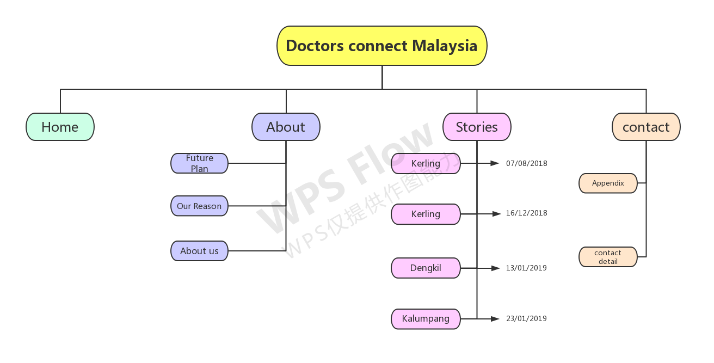

The main goal is to create a powerful and attractive website for Doctor contact. Create a rich and ideal user interface for medical professionals to find and apply to meet specific criteria. To increase our goal of creating more volunteer opportunities, we implemented a call-to-action, neatly organizing our requirements, easy-to-use contact details, and healthcare-related information. Another goal is to help the rescued. </ p>
Insert sucess evaluation statements here....
For adult & children, with core scope of services pertaining.
For the volunteer who is a doctor that can help us treat patients.
Login:admin2
Password:admin2admin2admin2
Here is our IA diagram below
